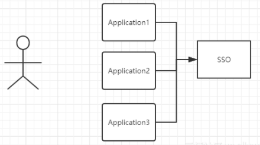
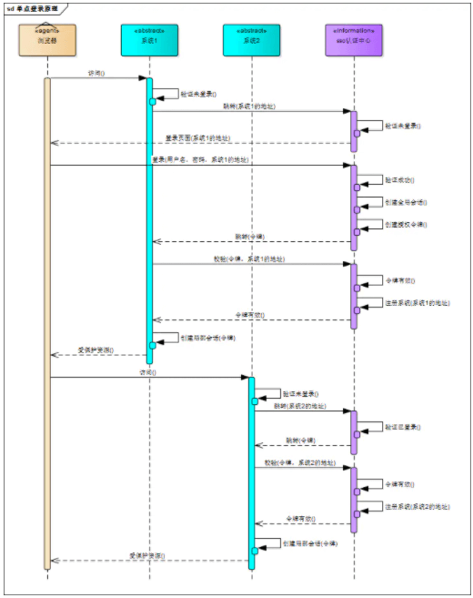

什么是单点登录，以及如何进行实现？
参考答案
一、是什么
单点登录（Single Sign On），简称为 SSO，是目前比较流行的企业业务整合的解决方案之一
SSO的定义是在多个应用系统中，用户只需要登录一次就可以访问所有相互信任的应用系统
SSO 一般都需要一个独立的认证中心（passport），子系统的登录均得通过passport，子系统本身将不参与登录操作
当一个系统成功登录以后，passport将会颁发一个令牌给各个子系统，子系统可以拿着令牌会获取各自的受保护资源，为了减少频繁认证，各个子系统在被passport授权以后，会建立一个局部会话，在一定时间内可以无需再次向passport发起认证

上图有四个系统，分别是Application1、Application2、Application3、和SSO，当Application1、Application2、Application3需要登录时，将跳到SSO系统，SSO系统完成登录，其他的应用系统也就随之登录了
举个例子
淘宝、天猫都属于阿里旗下，当用户登录淘宝后，再打开天猫，系统便自动帮用户登录了天猫，这种现象就属于单点登录
二、如何实现
同域名下的单点登录
cookie的domin属性设置为当前域的父域，并且父域的cookie会被子域所共享。path属性默认为web应用的上下文路径
利用 Cookie 的这个特点，没错，我们只需要将 Cookie 的 domain属性设置为父域的域名（主域名），同时将 Cookie 的 path 属性设置为根路径，将 Session ID（或 Token）保存到父域中。这样所有的子域应用就都可以访问到这个 Cookie
不过这要求应用系统的域名需建立在一个共同的主域名之下，如 tieba.baidu.com 和 map.baidu.com，它们都建立在 baidu.com 这个主域名之下，那么它们就可以通过这种方式来实现单点登录
不同域名下的单点登录(一)
如果是不同域的情况下，Cookie是不共享的，这里我们可以部署一个认证中心，用于专门处理登录请求的独立的 Web 服务
用户统一在认证中心进行登录，登录成功后，认证中心记录用户的登录状态，并将 token 写入 Cookie（注意这个 Cookie 是认证中心的，应用系统是访问不到的）
应用系统检查当前请求有没有 Token，如果没有，说明用户在当前系统中尚未登录，那么就将页面跳转至认证中心
由于这个操作会将认证中心的 Cookie 自动带过去，因此，认证中心能够根据 Cookie 知道用户是否已经登录过了
如果认证中心发现用户尚未登录，则返回登录页面，等待用户登录
如果发现用户已经登录过了，就不会让用户再次登录了，而是会跳转回目标 URL ，并在跳转前生成一个 Token，拼接在目标 URL 的后面，回传给目标应用系统
应用系统拿到 Token 之后，还需要向认证中心确认下 Token 的合法性，防止用户伪造。确认无误后，应用系统记录用户的登录状态，并将 Token 写入 Cookie，然后给本次访问放行。（注意这个 Cookie 是当前应用系统的）当用户再次访问当前应用系统时，就会自动带上这个 Token，应用系统验证 Token 发现用户已登录，于是就不会有认证中心什么事了
此种实现方式相对复杂，支持跨域，扩展性好，是单点登录的标准做法
不同域名下的单点登录(二)
可以选择将 Session ID （或 Token ）保存到浏览器的 LocalStorage 中，让前端在每次向后端发送请求时，主动将 LocalStorage 的数据传递给服务端
这些都是由前端来控制的，后端需要做的仅仅是在用户登录成功后，将 Session ID （或 Token ）放在响应体中传递给前端
单点登录完全可以在前端实现。前端拿到 Session ID （或 Token ）后，除了将它写入自己的 LocalStorage 中之外，还可以通过特殊手段将它写入多个其他域下的 LocalStorage 中
关键代码如下：
// 获取 token
var token = result.data.token;
// 动态创建一个不可见的iframe，在iframe中加载一个跨域HTML
var iframe = document.createElement("iframe");
iframe.src = "http://app1.com/localstorage.html";
document.body.append(iframe);
// 使用postMessage()方法将token传递给iframe
setTimeout(function () {
iframe.contentWindow.postMessage(token, "http://app1.com");
}, 4000);
setTimeout(function () {
iframe.remove();
}, 6000);
// 在这个iframe所加载的HTML中绑定一个事件监听器，当事件被触发时，把接收到的token数据写入localStorage
window.addEventListener('message', function (event) {
localStorage.setItem('token', event.data)
}, false);前端通过 iframe+postMessage() 方式，将同一份 Token 写入到了多个域下的 LocalStorage 中，前端每次在向后端发送请求之前，都会主动从 LocalStorage 中读取 Token 并在请求中携带，这样就实现了同一份 Token 被多个域所共享
此种实现方式完全由前端控制，几乎不需要后端参与，同样支持跨域
三、流程
单点登录的流程图如下所示：

- 用户访问系统1的受保护资源，系统1发现用户未登录，跳转至sso认证中心，并将自己的地址作为参数
- sso认证中心发现用户未登录，将用户引导至登录页面
- 用户输入用户名密码提交登录申请
- sso认证中心校验用户信息，创建用户与sso认证中心之间的会话，称为全局会话，同时创建授权令牌
- sso认证中心带着令牌跳转会最初的请求地址（系统1）
- 系统1拿到令牌，去sso认证中心校验令牌是否有效
- sso认证中心校验令牌，返回有效，注册系统1
- 系统1使用该令牌创建与用户的会话，称为局部会话，返回受保护资源
- 用户访问系统2的受保护资源
- 系统2发现用户未登录，跳转至sso认证中心，并将自己的地址作为参数
- sso认证中心发现用户已登录，跳转回系统2的地址，并附上令牌
- 系统2拿到令牌，去sso认证中心校验令牌是否有效
- sso认证中心校验令牌，返回有效，注册系统2
- 系统2使用该令牌创建与用户的局部会话，返回受保护资源
用户登录成功之后，会与sso认证中心及各个子系统建立会话，用户与sso认证中心建立的会话称为全局会话
用户与各个子系统建立的会话称为局部会话，局部会话建立之后，用户访问子系统受保护资源将不再通过sso认证中心
全局会话与局部会话有如下约束关系：
- 局部会话存在，全局会话一定存在
- 全局会话存在，局部会话不一定存在
- 全局会话销毁，局部会话必须销毁
- 单点登录（SSO） 允许用户在多个应用程序中仅登录一次，提升了用户体验和安全性。
- 实现方式 包括使用 SAML、OAuth 2.0、OpenID Connect 和 JWT 等协议。
- 关键步骤 包括设置身份认证提供者、配置服务提供者、实现登录流程、验证和授权。